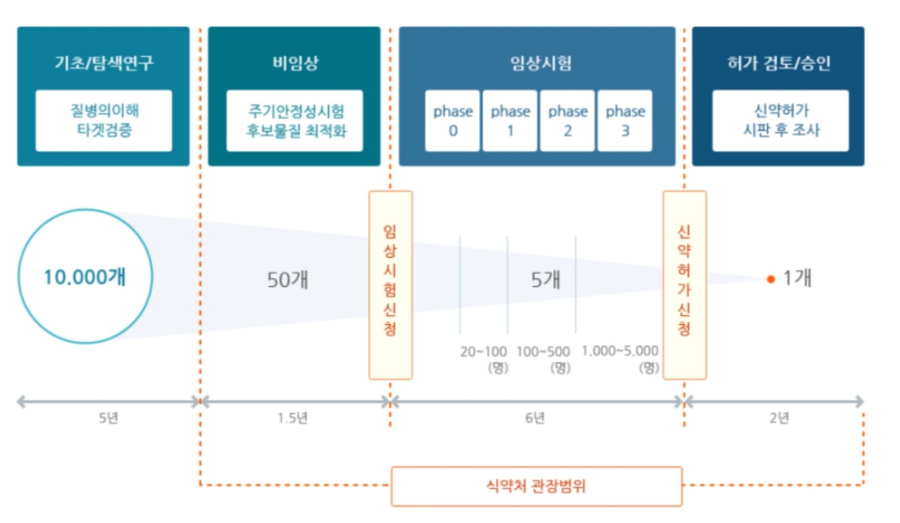
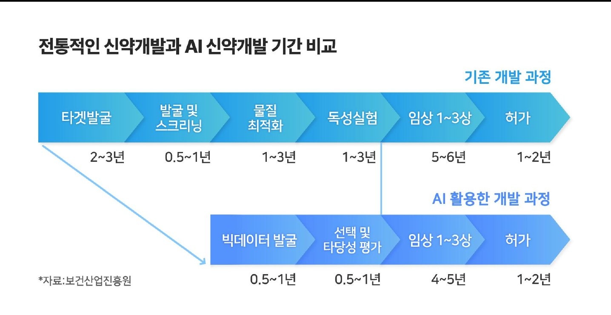
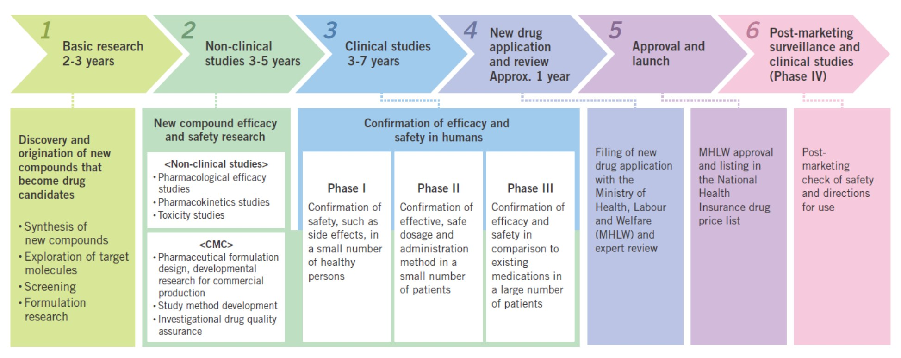

| 항목 | 내용 |
|---|---|
| 형식 | 단답식 · 객관식 · O/X · 서술형 혼합 |
| 배점 | 중간 40% · 기말 45% · 과제 5 · 참여 10 |
| 중간 범위 | 1~6주차 강의자료 — 6주차 「후보물질 탐색 및 발굴」은 p.33 (HTS)까지 |
| 패턴 | 실제 사례 (2024) |
|---|---|
| ① PPT 문장 + 단어 하나 뒤집기 | “허들 통과 못하는 비율 감소 추세” → 실제는 증가 “엘릭서 설파닐아마이드 간독성” → 실제는 신장독성 |
| ② 비슷한 용어 바꿔치기 | “전임상 결과로 NDA” → 정답은 IND (많이 틀림!) |
| ③ 약어 풀네임 쓰기 | IMD = Incrementally Modified Drug, API = Active Pharmaceutical Ingredient |
| ④ 구체적 약 이름 | 국산 신약·천연물신약 이름 (스티렌정, 조인스정 …) |
| ⑤ 서술형 = 핵심 기준 명시 | “서방정 vs 장용정 차이” → “제형 차이” ✗ / “천천히 vs 장에서 용출” ○ “5개 쓰기”는 하나 빠질 때마다 −1점 |
| 단계 | 사람 수 | 목적 (한 단어) |
|---|---|---|
| 전임상 | 동물·세포 | 안전성·효능 1차 확인 |
| 1상 | 20~100 | 안전성 (주로 건강인) |
| 2상 | 100~500 | 용량·유효성 (소수 환자) |
| 3상 | 1,000~5,000 | 대규모 확증 (기존 약과 비교) |
| 4상 | 시판 후 전체 | 시판 후 조사 (드문 부작용) |
| 미국 FDA | 한국 식약처 |
|---|---|
| IND | 임상시험계획 승인 신청 = 임상시험 신청 |
| NDA (바이오는 BLA) | 품목허가 신청 = 신약허가 신청 |
| Phase 4 | 시판 후 조사 (재심사) |

| 뉴스 | 과정 속 위치 |
|---|---|
| “하나의 신약 개발까지 최대 15년 이상” | 전체 기간 |
| 일동제약, GLP-1RA 신물질 IND 승인 (경구 제형으로 차별화) | 전임상 → 임상 시작 |
| 제넥신, 단장증후군 신약 개발 중단 — “선택과 집중” | 임상 중 탈락 |
| FDA 허가 국산 신약 엑스코프리(SK바이오팜·뇌전증)·롤베돈(한미·호중구감소증) 매출 성장 | 허가 → 시장 성공 |

| 분야 | 대표 국산 신약 (회사) | 연도 |
|---|---|---|
| 항암 | 선플라주(SK케미칼·위암) · 캄토벨정(종근당) · 올리타정(한미·표적) · 렉라자정(유한·폐암) | '99~'21 |
| 감염 | 팩티브정(LG·항생제) · 레보비르(부광·B형간염) · 렉키로나주(셀트리온·코로나19 치료) | '02~'21 |
| 만성질환 | 카나브정(보령·고혈압) · 제미글로정(LG·당뇨) · 케이캡정(CJ·위식도역류) · 펙수클루정(대웅·위식도역류) | '10~'21 |
| 백신·바이오 | 스카이코비원멀티주(SK바이오사이언스·코로나19 예방 백신) · 롤론티스(한미·호중구감소증) | '21~'22 |
| 비뇨·기타 | 자이데나정(동아·발기부전) · 펠루비정(대원·골관절염) · 놀텍정(일양·항궤양) | '05~'08 |

| 기준 | 어디서? |
|---|---|
| GLP Good Laboratory Practice | 비임상(동물·독성) |
| GCP Good Clinical Practice | 임상시험 |
| GMP Good Manufacturing Practice | 제조·품질관리 |
| 약어 | 풀네임 | 쉽게 말하면 |
|---|---|---|
| IND | Investigational New Drug | 임상시험계획 승인 신청 — 사람 투여 허락 |
| NDA | New Drug Application | 신약 허가 신청 — 판매 허락 (바이오 = BLA) |
| GLP | Good Laboratory Practice | 비임상시험 관리 기준 |
| GMP | Good Manufacturing Practice | 의약품 제조·품질관리 기준 |
| CRO | Contract Research Organization | 임상·비임상 연구 대행 회사 |
| CDMO | Contract Development & Manufacturing Org. | 위탁 개발+생산 (예: 삼성바이오로직스) |
| IMD | Incrementally Modified Drug | 개량신약 2024 기출 |
| API | Active Pharmaceutical Ingredient | 원료의약품(유효성분) 2024 기출 |
| ADC | Antibody-Drug Conjugate | 항체에 약물을 붙인 “유도미사일” |
| mRNA | messenger RNA | 단백질 설계도를 넣어 몸이 직접 만들게 (코로나 백신) |
| OTC | Over The Counter | 처방전 없이 약국에서 사는 약 |
| 원본 | 뭐가 달라? | |
|---|---|---|
| Generic 제네릭 | 합성 신약 | 성분 완전히 동일 → 임상 대신 생물학적 동등성 시험 |
| Biosimilar 바이오시밀러 | 바이오의약품 | 살아있는 세포로 만들어 100% 같을 수 없음 → “동등생물의약품”(유사) |
| Biobetter 바이오베터 | 바이오의약품 | 복제 + 개량 (효능·편의성 ↑) |
| # | 답 | 한 줄 해설 |
|---|---|---|
| 1 | O | 식약처장 지정 |
| 2 | X | 기구·기계·장치는 제외 → 의료기기 |
| 3 | X | 그건 NDA. IND = 임상 시작 전 |
| 4 | O | 1상 = 건강인 · 안전성 |
| 5 | X | 3상 = 1,000~5,000명 (20~100은 1상) |
| 6 | O | 2024 생동성 시험 |
| 7 | X | 2024 임상 의무 없는 건 제네릭뿐 |
| 8 | X | 허가 1~2년 그대로 |
| 9 | O | 미량·소수·약동학 탐색 |
| 10 | O | 2024 “감소”로 내면 X |